Sommaire
- Premier lancement — l'accueil
- Code d'accès — proposé, mais skippable
- Le tableau de bord (vide au départ)
- Ajouter un appartement (et ses lignes)
- Votre parc complet
- Piloter les lignes d'un logement
- Gérer une ligne (double-tap)
- Suivre la consommation
- Configurer le kit
- Partage de config par QR Code
- Réglages de l'application
- Sécurité — code, empreinte, récupération
- Aide intégrée (FAQ)
- Annexe — les messages SMS
À qui s'adresse ce guide ?
Ce guide suit un scénario concret : celui d'un bailleur qui possède plusieurs logements (Appartement A, B, C) et qui souhaite piloter à distance l'électricité de chacun depuis un seul téléphone — de l'installation jusqu'à la gestion fine des lignes, et le partage de configuration entre deux téléphones par QR Code.
Premier lancement — l'accueil
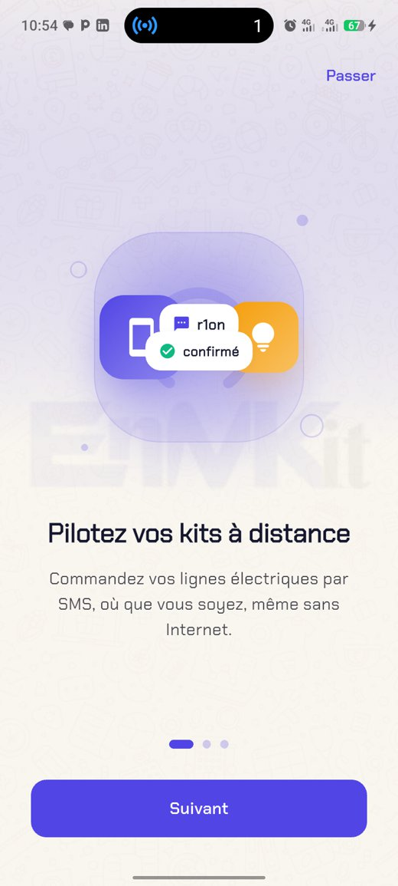
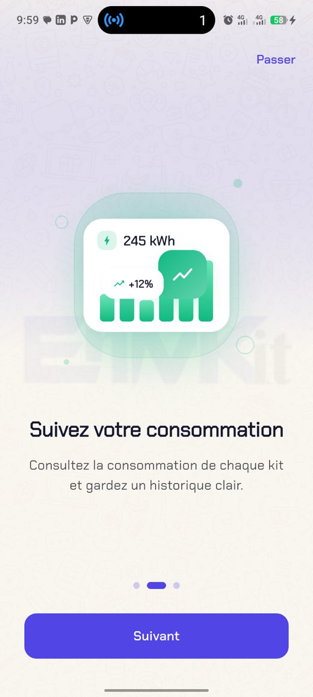
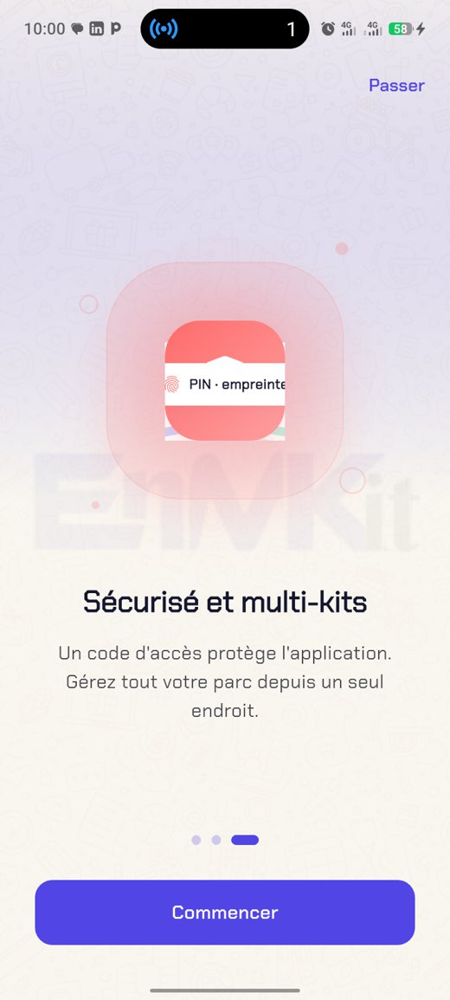
Trois écrans d'introduction
- Pilotez à distance — vos lignes par SMS, sans Internet.
- Suivez la consommation — conso de chaque kit + historique.
- Sécurisé et multi-kits — tout votre parc en un seul endroit.
Appuyez sur Suivant / Commencer. Le lien Passer saute l'introduction.
Code d'accès — proposé, mais skippable
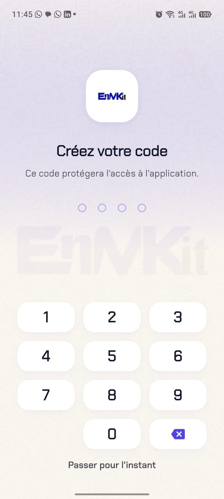
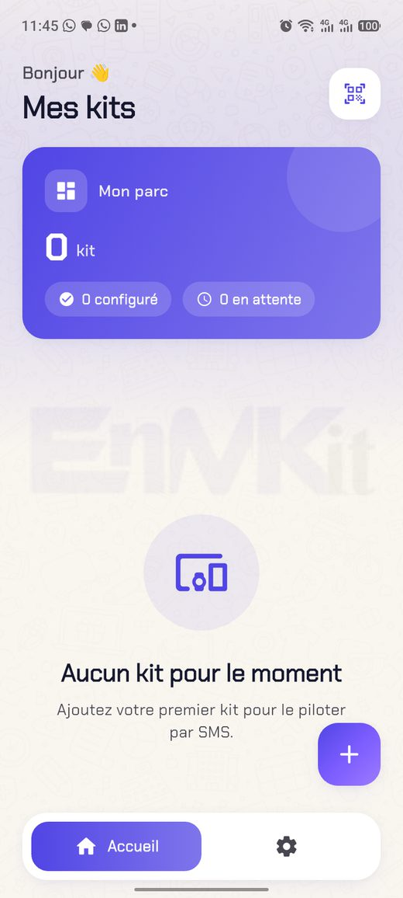
Nouveau Une sécurité proposée, jamais imposée
Juste après l'introduction, l'app propose de créer un code — mais un bouton « Passer pour l'instant » permet d'aller directement au tableau de bord.
- Créer un code (4 chiffres) → protège l'ouverture de l'app.
- Passer → accès direct, sans code.
🔐 Proposition affichée une seule fois. Activable plus tard dans Réglages → Sécurité (§12).
Le tableau de bord (vide au départ)
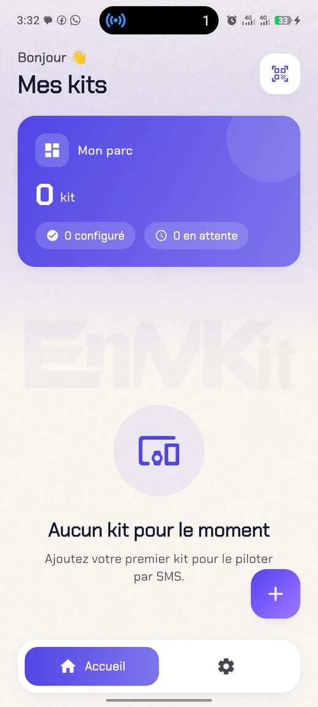
« Mes kits » — encore vide
Au tout début, aucun kit n'est enregistré. La carte « Mon parc » affiche 0 kit.
Le bouton + (en bas à droite) ajoute votre premier kit.
Ajouter un appartement (et choisir les lignes)
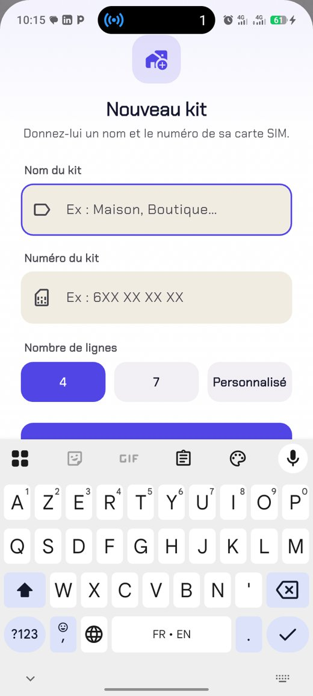
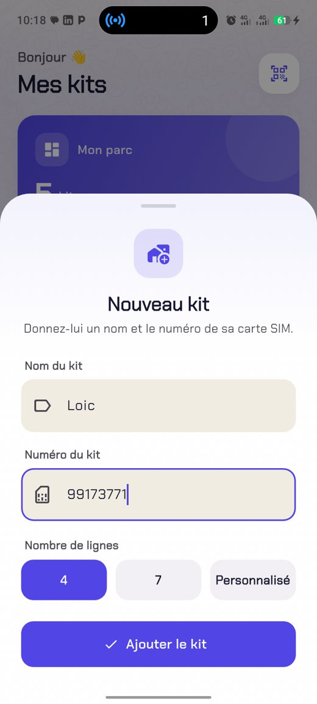
Fenêtre « Nouveau kit »
Renseignez le Nom du kit et le Numéro du kit (sa carte SIM), par ex. Loïc et 699173771.
💡 Nommez chaque kit d'après le logement (Appartement A, B…) pour vous y retrouver.
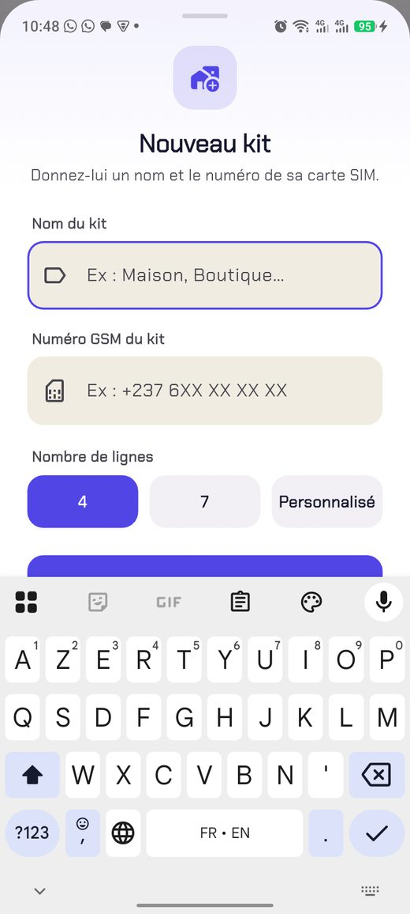
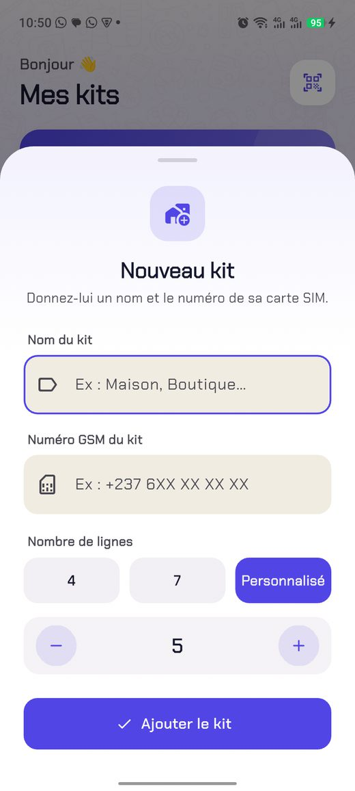
Nouveau Choisir le nombre de lignes
Avant de valider : 4, 7 ou Personnalisé (1 à 7, via − / +). Les lignes sont créées automatiquement (Ligne 1, Ligne 2…), à renommer ensuite (§7).
Votre parc complet
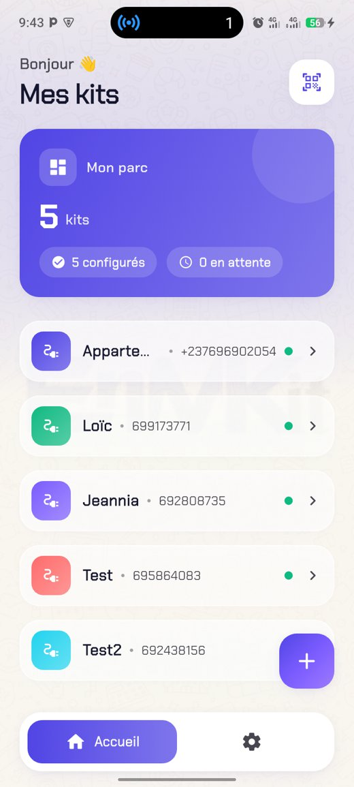
Trois appartements gérés
Après avoir répété l'opération, le bailleur gère Appartement A, B et C. La carte « Mon parc » indique 3 kits, 3 configurés.
Chaque carte montre le nom, le numéro du kit et un point de statut. Touchez-la pour ouvrir le logement.
Piloter les lignes d'un logement
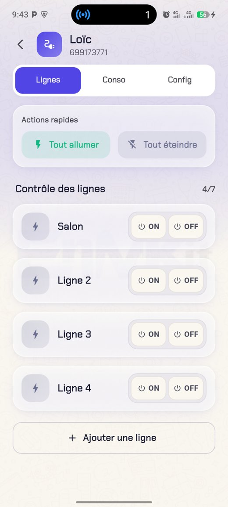
L'onglet Lignes — le poste de commande
- Trois onglets : Lignes, Conso, Config.
- Compteur « 4/7 » : un kit gère jusqu'à 7 lignes, numérotées 1 à 7 (ordre des lignes dans le kit).
- Actions rapides : Tout allumer / Tout éteindre.
- Chaque ligne : son nom + deux boutons ON / OFF qui envoient la commande par SMS.
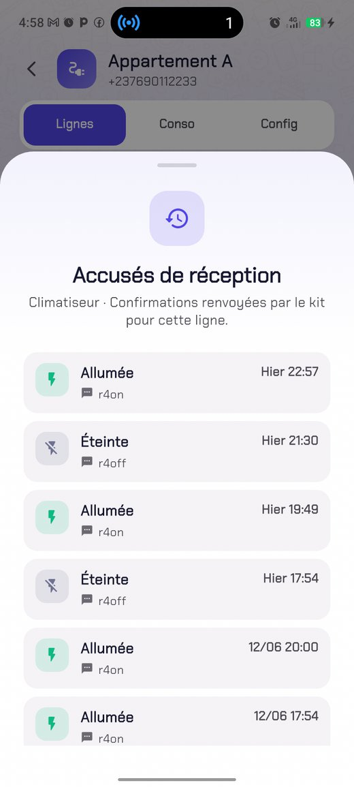
Des boutons d'action — l'état réel se lit dans l'historique
Les boutons ON / OFF sont volontairement neutres : appuyer ne fait qu'envoyer la commande au kit (r1on…r7on, où le chiffre est le numéro de ligne 1–7). L'app n'affiche aucun état « supposé » sur les boutons, pour ne pas induire en erreur.
Pour connaître l'état réellement confirmé, touchez l'icône horloge d'une ligne : son historique des accusés liste chaque confirmation (Allumée / Éteinte), le message exact renvoyé par le kit (ex. r1on) et l'heure.
⏳ Pendant l'envoi, le bouton pressé affiche brièvement « envoi en cours » et le contrôle est verrouillé pour éviter un double SMS.
Le dialogue SMS, en images
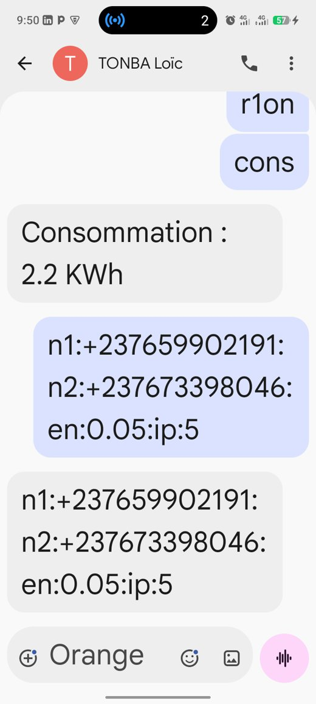
Tout passe par SMS — voici le dialogue réel
Depuis la messagerie du téléphone, on voit le dialogue exact entre l'app et le kit :
- Commander une ligne : l'app envoie
r1on/r1off(le chiffre = le numéro de ligne 1–7). - Demander la consommation : l'app envoie
cons; le kit répondConsommation : 2.2 KWh. - Configurer le kit : l'app envoie
n1:…:n2:…:en:…:ip:…; le kit renvoie le même message en accusé de configuration.
📶 Aucune connexion Internet n'est requise : tout fonctionne par SMS, où que vous soyez.
Gérer une ligne (double-tap : renommer / supprimer)
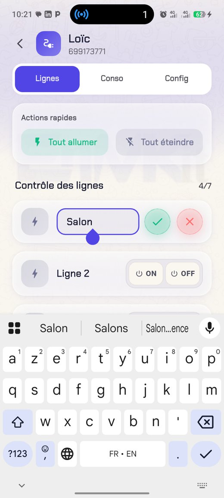
Nouveau Édition par double-tap
Double-tapez une ligne : son nom devient modifiable, accompagné de deux boutons ronds épurés — ✓ vert (valider) et ✕ rouge (supprimer).
Saisissez le nouveau nom (Climatiseur, Chambre, Salon…) puis ✓. L'ampérage n'est plus demandé : une ligne se résume à son nom et son état.
Pour ajouter : « + Ajouter une ligne » (un nom suffit).
Des lignes parlantes
Nommez les lignes selon ce qu'elles alimentent : ici Climatiseur, Salon, Chambre… bien plus clair qu'un numéro.
Suivre la consommation
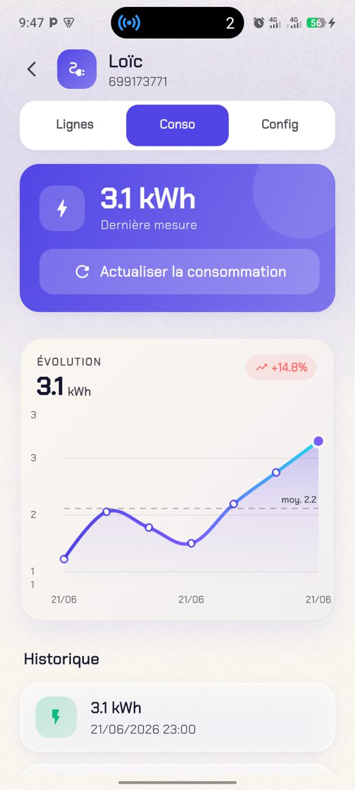
L'onglet Conso
« Actualiser la consommation » interroge le kit par SMS : il répond avec le relevé.
Les mesures s'accumulent ensuite dans l'Historique.
Configurer le kit
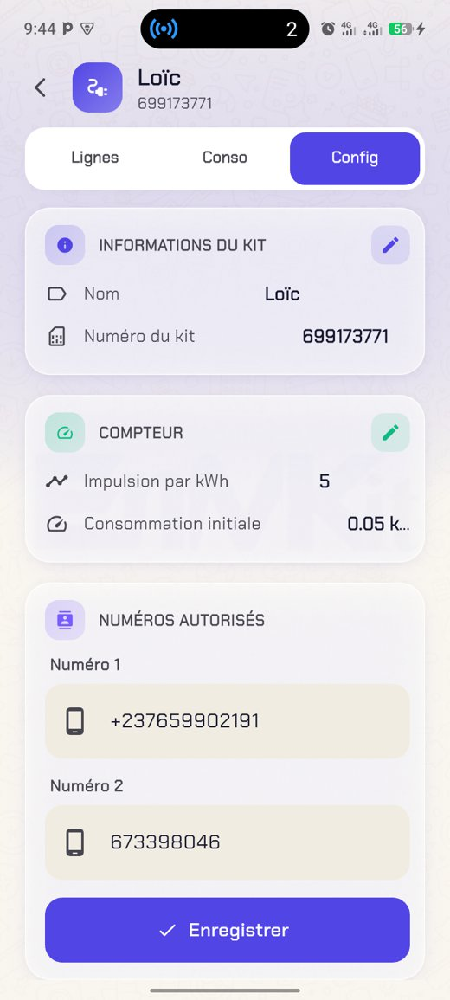
L'onglet Config — tout au même endroit
- Informations du kit — nom et numéro du kit.
- Compteur — impulsion par kWh et consommation initiale.
- Numéros autorisés — qui peut commander par SMS.
- Envoyer la configuration au boîtier (SMS).
- Générer le QR Code de partage (§10).
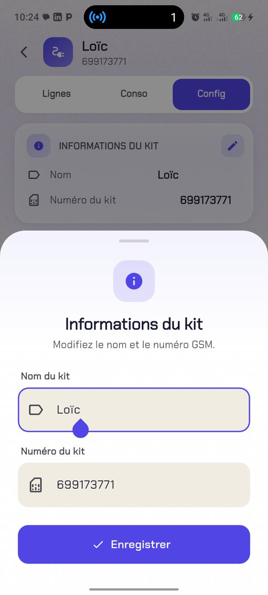
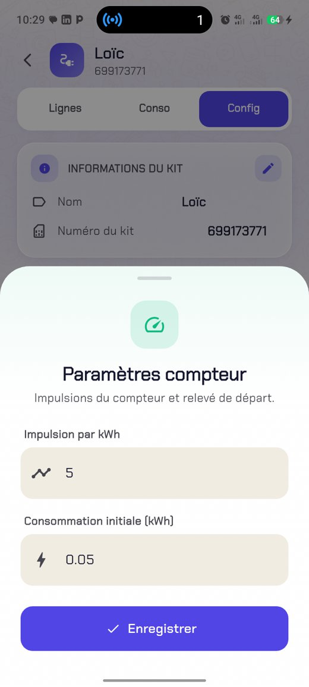
Deux éditions via le crayon ✏️
- Informations : corriger le nom et le numéro du kit.
- Compteur : impulsion par kWh + consommation initiale (kWh).
Les numéros autorisés se saisissent directement dans deux champs de l'onglet Config (Numéro 1 / Numéro 2) — le kit n'en gère que deux — puis « Enregistrer ». Pratique pour habiliter un gardien ou un colocataire.
Partager la configuration par QR Code
Un atout majeur pour un bailleur : dupliquer ou transmettre la configuration d'un kit d'un téléphone à un autre, sans tout ressaisir.
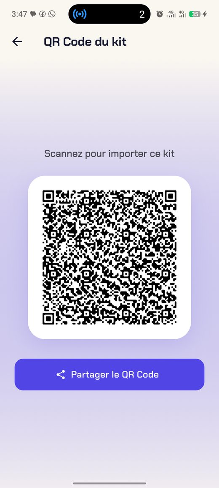
Étape A Téléphone source
Config → « Générer le QR Code ». Le QR contient toute la configuration (numéro, lignes…). « Partager le QR Code » l'envoie aussi en image.
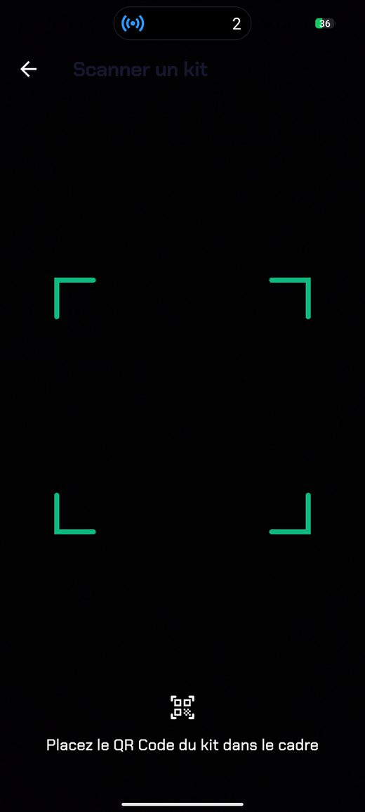
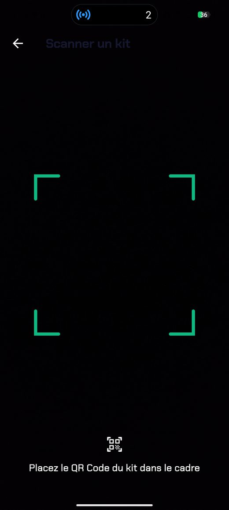
Étape B Téléphone destinataire
Touchez l'icône scanner (en haut à droite), autorisez la caméra, puis cadrez le QR du premier téléphone. Le kit est alors importé automatiquement.
Réglages de l'application
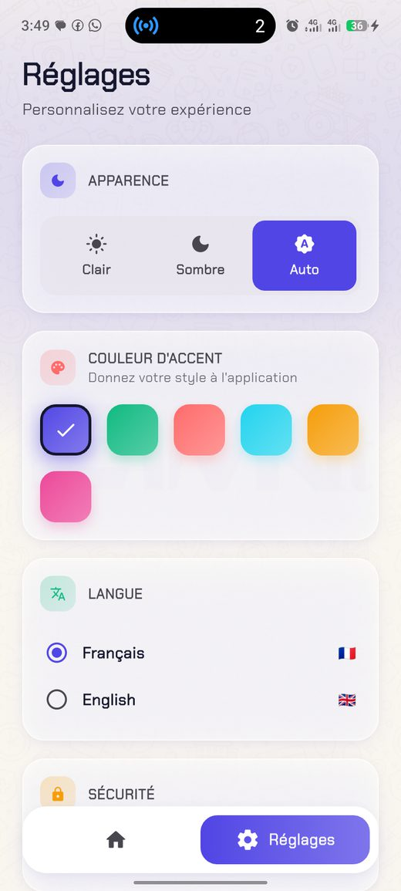
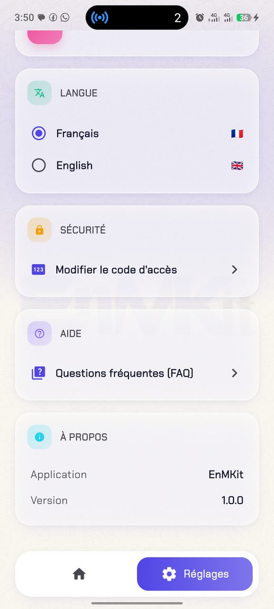
Personnalisation & sécurité
- Apparence : Clair / Sombre / Auto.
- Couleur d'accent et Langue (Français / English).
- Sécurité (code, empreinte, récupération), Aide (FAQ) et À propos.
Sécurité — code, empreinte et récupération
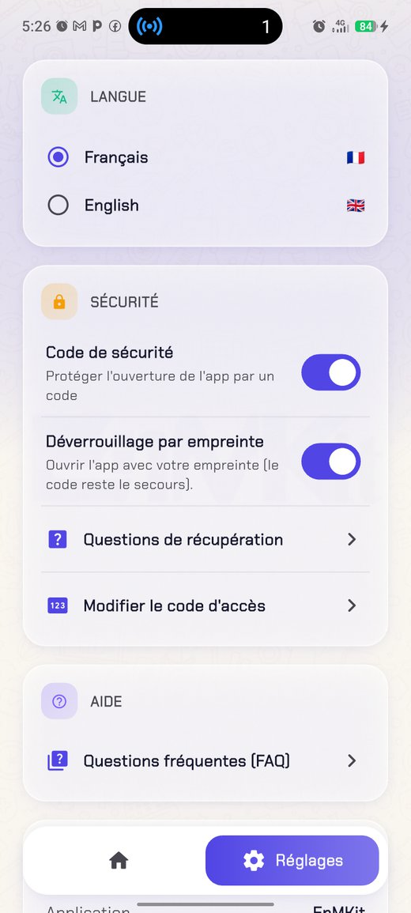
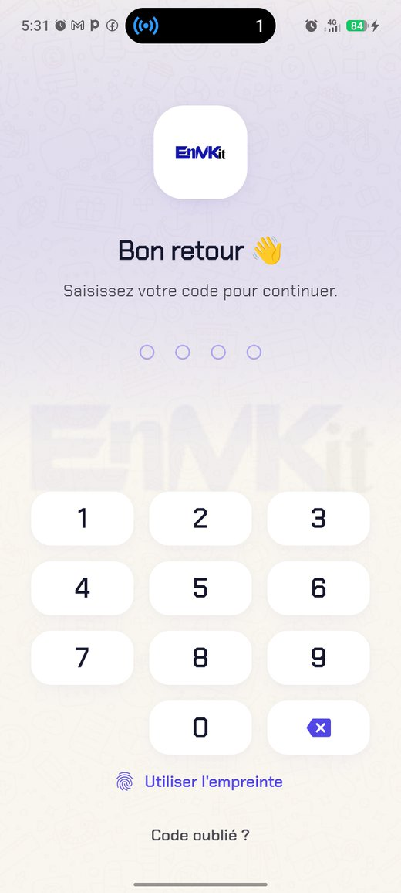
Nouveau Quatre réglages de sécurité
Code de sécurité : l'interrupteur active/désactive le code (activer → créer ; désactiver → saisir le code actuel). « Modifier le code d'accès » : ancien + nouveau + confirmation.
Déverrouillage par empreinte : ouvrez l'app avec votre empreinte digitale au lieu du code. Nécessite une empreinte enregistrée sur le téléphone ; sinon « Aucune empreinte enregistrée ». 🔑 Le code reste le secours.
Questions de récupération : deux questions secrètes qui permettent de retrouver l'accès via « Code oublié ? » si vous oubliez le code.
Aide intégrée (FAQ)
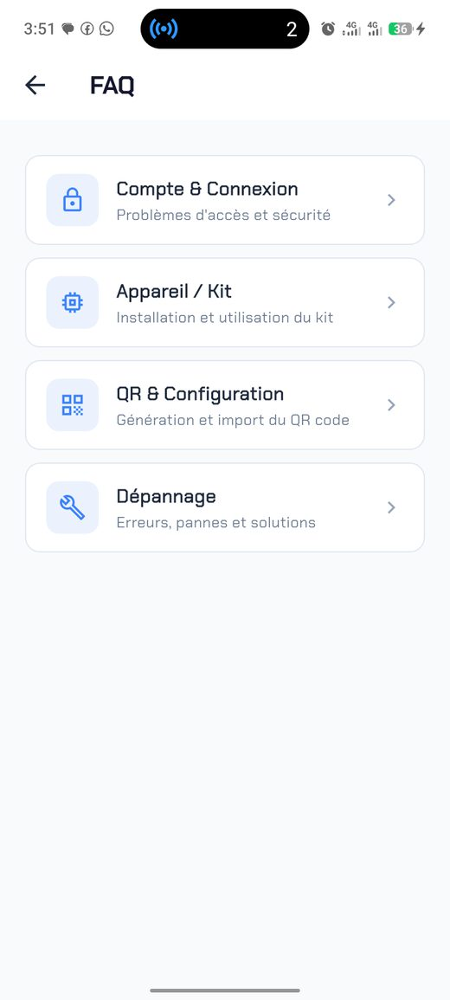
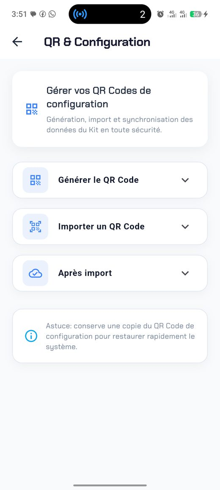
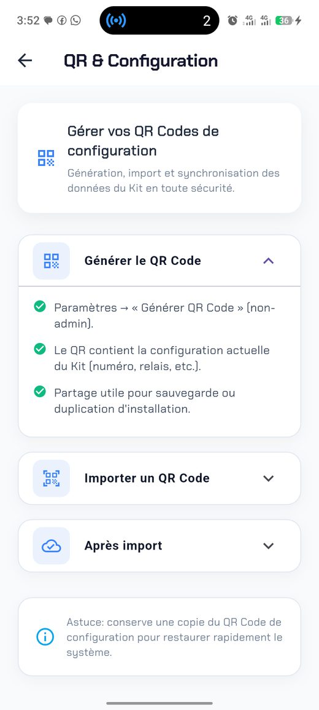
Une FAQ classée par thème
Dans Réglages → Aide : Compte & Connexion, Appareil / Kit, QR & Configuration et Dépannage.
La rubrique QR & Configuration détaille le partage du §10 (générer / importer / après import).
Annexe — les messages SMS échangés avec le kit
| Quand vous… | Message envoyé | Le kit répond |
|---|---|---|
| Allumez la ligne N | r<N>on (ex. r2on) | renvoie r2on (confirmation) |
| Coupez la ligne N | r<N>off (ex. r2off) | renvoie r2off (confirmation) |
| Actualisez la consommation | cons | renvoie Consommation : … KWh |
| Enregistrez le numéro autorisé 1 | n1:<numéro> | renvoie n1:… |
| Enregistrez le numéro autorisé 2 | n2:<numéro> | renvoie n2:… |
| Réglez la consommation initiale | en:<kWh> | renvoie en:… |
| Réglez les impulsions du compteur | ip:<nombre> | renvoie ip:… |
| Terminez l'envoi de configuration | Fin_config | — |
: — ex.
n1:+237…:n2:+237…:en:…:ip:… — et un aperçu s'affiche pour validation avant l'envoi.
⚠️ Ces mots-clés correspondent au langage du boîtier : ils ne se modifient pas côté application.
Les numéros sont automatiquement mis au format +237.rNon / rNoff
met à jour l'état de la ligne N sur tous les téléphones autorisés (même app fermée) et est
horodaté dans l'historique des accusés de la ligne (§6.3), avec le texte brut reçu.
Un message contenant « … kWh » est enregistré comme un relevé de consommation.Récapitulatif — le parcours du bailleur
- Installer l'app ; créer un code seulement si souhaité — la page est skippable (§1–2, §12).
- Ajouter chaque appartement comme un kit, avec son numéro de kit et son nombre de lignes (§4–5).
- Nommer et piloter les lignes (numérotées 1–7) par double-tap, avec actions groupées et historique des accusés (§6–7).
- Suivre la consommation (§8).
- Configurer le kit : infos, compteur, numéros autorisés (§9).
- Partager / dupliquer la configuration par QR Code — l'état des lignes se synchronise (§10).
- Personnaliser et sécuriser l'application (§11–12), avec une FAQ (§13) et l'annexe SMS (§14).